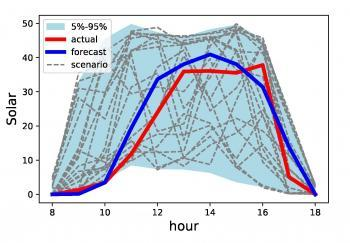

Operational Risk Financialization of Electricity Under Stochasticity
ORFEUS is a research platform that measures how uncertainty in demand, wind, and solar affects system costs and reliability. It provides transparent, quantitative tools to help operators and policymakers plan a cost-effective and reliable electricity transition.

Quantifying operational risk in renewable electricity systems
Objectives
Modern electricity markets face new sources of risk as renewables footprint increases, and price formation in the traditional sense will ultimately be subordinated to reliability quantification. The ORFEUS platform ascribes risk and costs to each asset's contribution to system operational cost. Its major components include:
- Nodal load and generation scenarios
- Analysis of system operation costs
- Risk allocation and construction of system risk indices
- Securitization and risk transfer
Texas 2030 grid

A Stochastic Model Capturing Correlations
Renewable energy resources reduce carbon footprint and marginal cost, but also introduce risk to the grid that is not fully accounted for under current operational paradigms. The fulcrum of the ORFEUS platform is a set of asset-specific modules which calibrate stochastic models of the joint behavior of forecasted and actual production, tailored to wind, solar and load. Models are linked through a high-dimensional correlation constructor which renders spatial and temporal correlation structure tractable via LASSO-based methods and parametric representations of locational correlation structure (Gaussian Random Fields). The last figure shows examples of graphical LASSO correlation effects for NYISO and ERCOT zonal load forecast errors.



Financial Risk Measures Reliability Indices
Zero-marginal-cost assets are usually guaranteed to be committed even if they create potentially costly externalities due to uncertain production. The ORFEUS risk-based cost module rigorously decomposes the results of the simulation batch into reliability costs by asset and zone using coherent risk measure methodologies ensuring that system operations allocate realized costs equitably.

How the ORFEUS platform works
ORFEUS links renewable variability, system operation, and financial risk from asset-level models through to risk indices and hedging products.
Generate scenarios
Calibrate stochastic models of the joint behavior of forecasts and actuals, tailored to wind, solar, and load at each node.
Simulate system operation
Run large batches of day-ahead scenarios through security-constrained unit commitment and economic dispatch.
Attribute risk and cost
Decompose realized system costs using coherent risk measures and attribute them to assets and zones.
Data & tools
Explore ORFEUS visualizations, risk indices, and downloadable datasets.
Interactive visualizations
Scenario and risk visualizations in a browser-based interface.
Downloadable datasets
Scenario data, risk indices, correlation matrices, and more.
Methods & documentation
Technical descriptions of models, calibration, and risk allocation.
Printable project overview
Download a concise overview of the ORFEUS project, suitable for briefings and handouts.
Download ORFEUS flyer (placeholder)